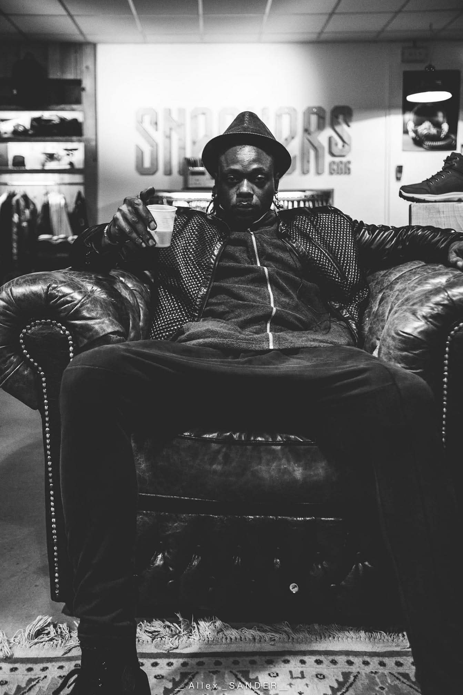

Artiste plasticien autodidacte · Né à Nice · Installé à Nancy
Né à Nice, bercé par les rythmes ensoleillés de la Côte d'Ivoire des années 80, Kaz Ahmed Koné a grandi entre les ruelles animées d'Abidjan et les paysages contrastés de la France des années 90.
Amoureux du basket et de la musique, il puise son inspiration dans les vibrations de son enfance — où les sons du zouglou côtoyaient les mélodies pop, et où les graffitis urbains dialoguaient avec les motifs ancestraux ivoiriens.
Son art pluridisciplinaire est un voyage entre tradition et modernité : de la peinture classique au numérique, en passant par l'upcycling et la sculpture, il explore sans cesse de nouveaux horizons.
« S'enraciner dans sa culture ancestrale, c'est puiser à la source d'une sagesse millénaire pour éclairer le chemin de demain. »— Kaz Ahmed Koné
Je crois en un art qui ne se contente pas d'être regardé, mais ressenti. Une expérience où le spectateur devient explorateur, découvrant ses propres interprétations dans mes textures, mes contrastes et mes symboles.
Mon travail puise son essence dans le cubisme, le street art, la culture mandingue, le sacré et la nature. Installé à Nancy, je suis un créateur inclassable — un pont entre les cultures, un artiste qui transforme le passé en futur et le quotidien en œuvre d'art.
Mes séries — Zaouli Funk, Voodoo Child, Sneaker Lover — sont autant de dialogues entre l'héritage africain et la pop culture mondiale. Chaque toile raconte une histoire que les mots ne peuvent pas dire.
Série Zaouli Funk
Création numérique · Inspiré du masque Zaouli du peuple Gouro de Côte d'Ivoire
Série Voodoo Child
Création numérique · Hommage aux icônes musicales
Série Sneaker Lover
Création numérique · Chuck Taylor, Shaq O'Neal — culture basket & street
Peintures sur kraft & canvas
Acrylique · Formats A3 à 180×150 cm · Portraits, figures, abstractions
Sculptures & Upcycling
Amphores et vases peints · Objets du quotidien transformés en œuvres d'art
L'Est Républicain
Nancy · Article de presse · Artiste plasticien nancéien